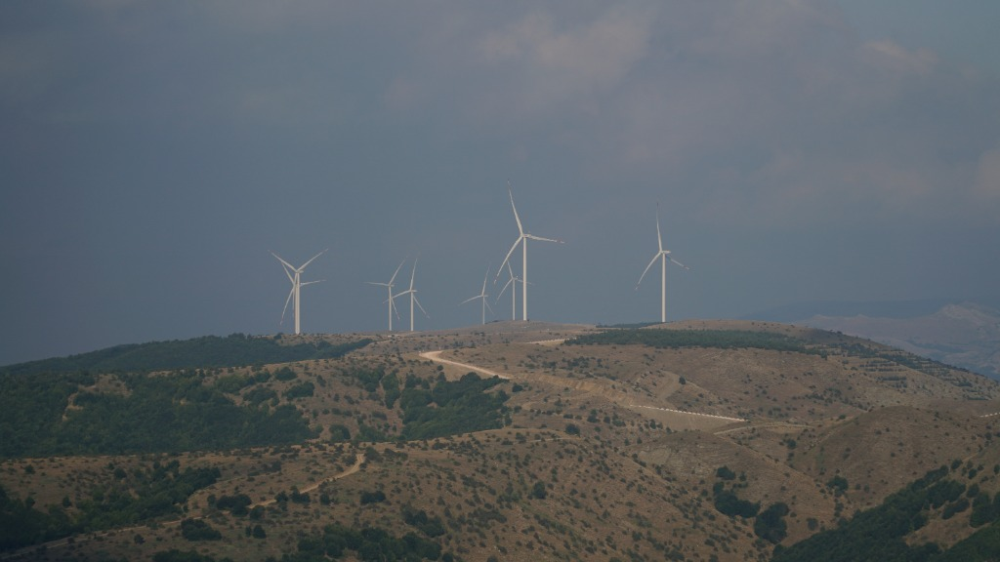
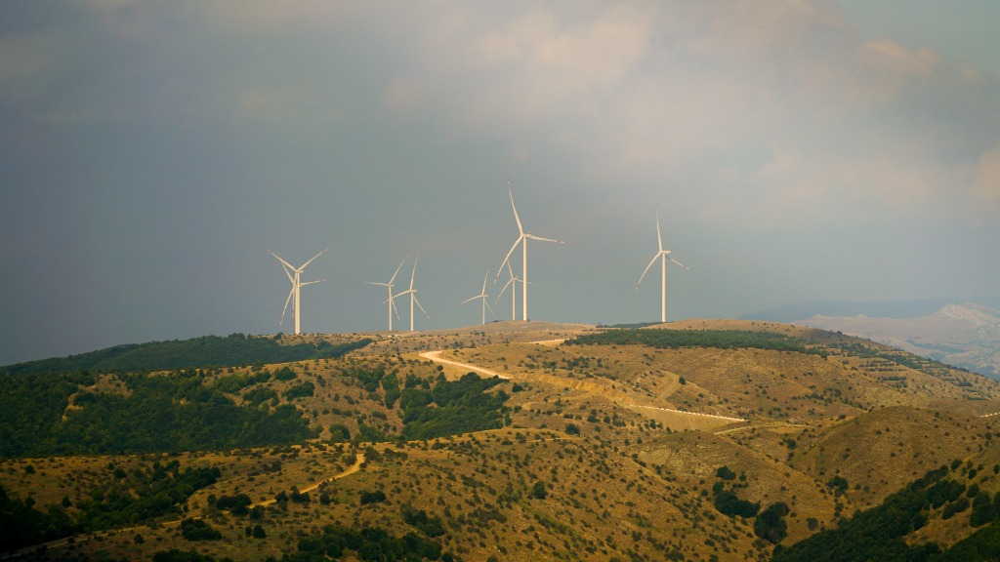
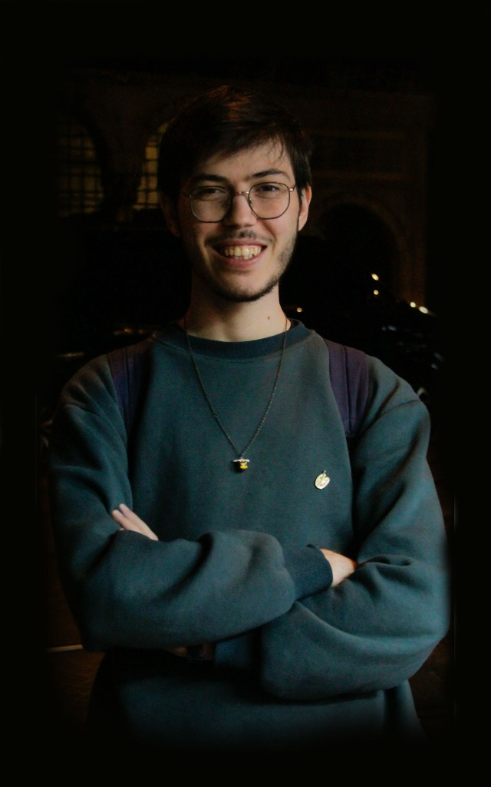

Tam ekran incelemek için görsellere tıklayabilirsiniz.
Sürgüyü sağa ve sola kaydırarak ham sensör görüntüsü ile nihai renk düzenlemesi arasındaki farkı inceleyin.

HAM RAW / LOG
RENK KURGUSU // GRADEDÇekimlerimde ve kurgu süreçlerimde aktif olarak kullandığım donanımlar ve yazılımlar.

Furkan Karakuş
Merhaba! Ben Furkan, 22 yaşındayım ve Yalova Üniversitesi'nde öğrenim görüyorum. Fotoğrafçılık ve videografiye hobi olarak başladığım yolculuk, zamanla büyük bir tutkuya dönüştü. Kendimi bu alanda sürekli geliştirerek profesyonel seviyeye ulaşmayı hedefliyorum.
Sinematik kısa videolar üretmek ve sokak fotoğrafları çekmek görsel anlatım tarzımı şekillendiriyor.
Reflekslerini test et! Hareket eden obje alan derinliğine girdiğinde ve yeşil odak çizgisi belirdiğinde TIKLA veya BOŞLUK (SPACE) tuşuna basarak kusursuz kareyi yakala.